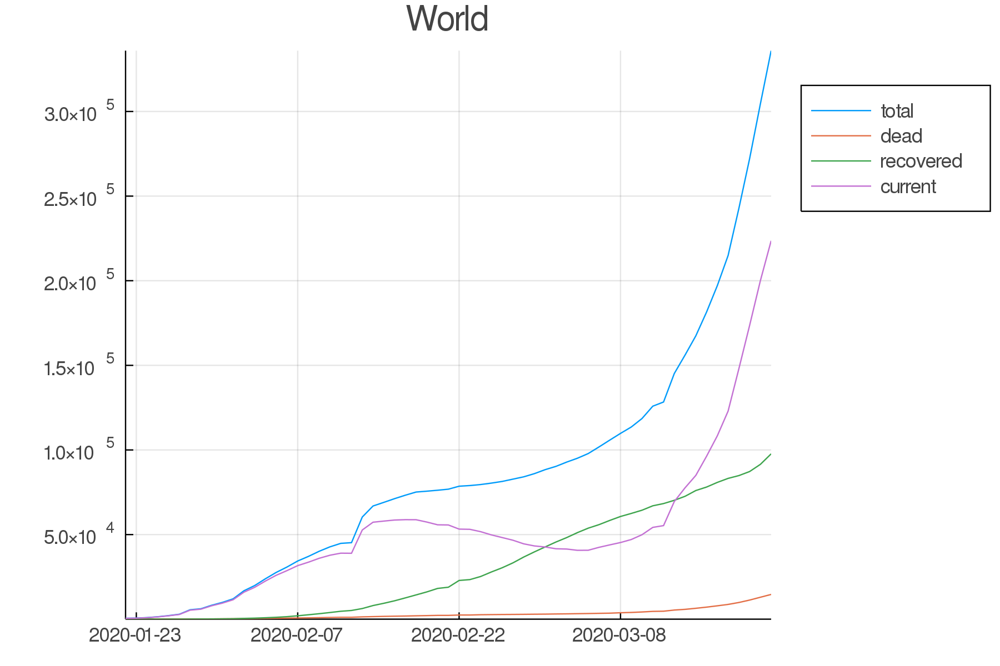
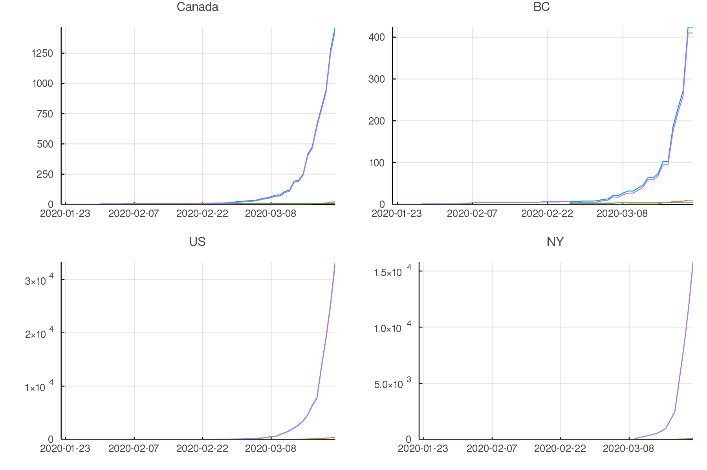
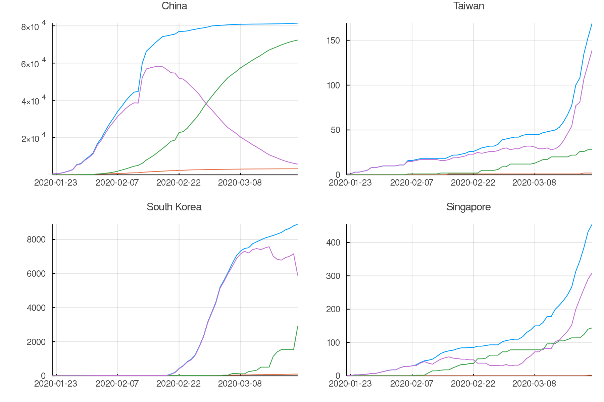
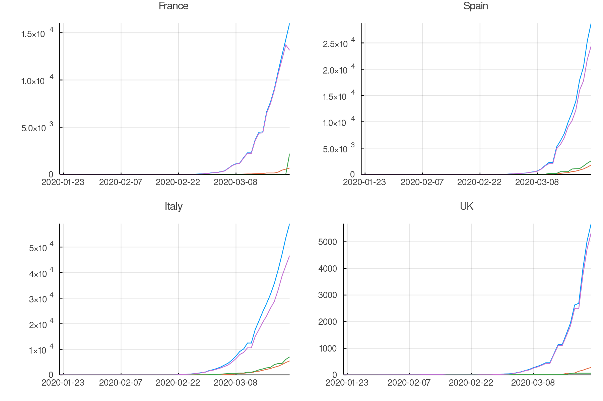
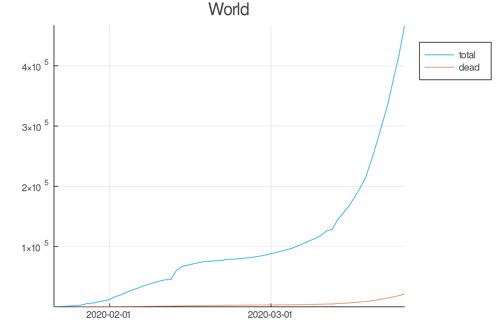
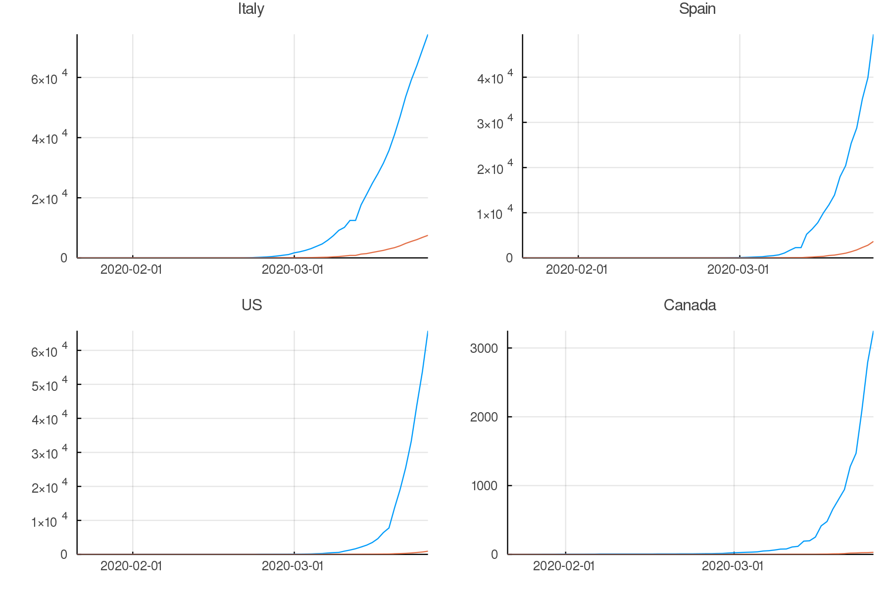
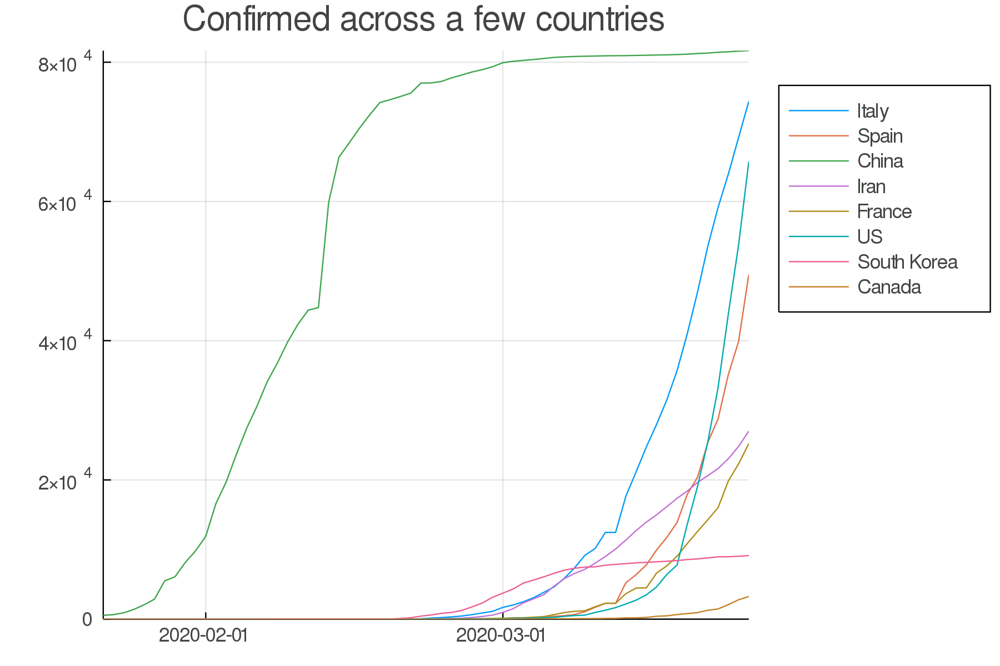
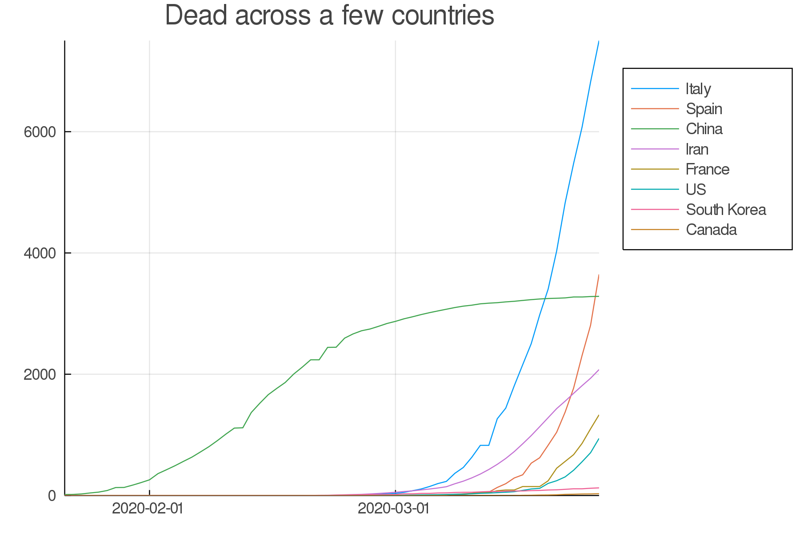

Working with tabular data:
An example with Covid-19
Requirements:
1 - The current Julia stable release
Installation instructions can be found here.
2 - The packages: CSV, DataFrames, TimeSeries, Plots
Packages can be installed with ] add <package>.
3 - Covid-19 data from the Johns Hopkins University CSSE repository
Clone (git clone <repo url>) or download and unzip the repository.
Load packages
using CSV
using DataFrames
using Dates # From the standard Julia library
using TimeSeries
using NamedArrays
using PlotsWe will use the GR framework as a backend for Plots.
Data until March 22, 2020

from xkcd.com
The files in the Johns Hopkins University CSSE repository have changed over time.
In this workshop, we will use 2 sets of files:
- a first set from January 22, 2020 until March 22, 2020
- a second set from January 22, 2020 to the present
Both sets contain data on confirmed and dead cases for world countries and in some cases their subregions (provinces, states, etc. which I will globally here call “provinces”).
The first set also contains numbers of recovered cases which allow to calculate numbers of currently ill persons (of course, keep in mind that all these data represent various degrees of underestimation and are flawed in many ways, amongst which are varying levels of testing efforts both geographically and over time, under-reporting, etc).
The second set does not contain recovered cases (many overwhelmed countries stopped monitoring this at some point).
We will play with the first set together and you will then try to play with the second set on your own.
Load the data
If you did not clone or download and unzip the Covid-19 data repository in your working directory, adapt the path consequently.
#= create a variable with the path we are interested in;
this makes the code below a bit shorter =#
dir = "COVID-19/csse_covid_19_data/csse_covid_19_time_series"
# create a list of the full paths of all the files in dir
list = joinpath.(relpath(dir), readdir(dir))
#= read in the 3 csv files with confirmed, dead, and recovered numbers
corresponding to the first set of data (until March 22, 2020) =#
dat = DataFrame.(CSV.File.(list[collect(2:4)]))We now have a one-dimensional array of 3 DataFrames called dat.
Transform data into long format
# rename some variables to easier names
DataFrames.rename!.(dat, Dict.(1 => Symbol("province"),
2 => Symbol("country")))
# create a one-dimensional array of strings
var = ["total", "dead", "recovered"]
#= transform the data into long format in a vectorized fashion
using both our one-dimensional arrays of 3 elements =#
datlong = map((x, y) -> stack(x, Not(collect(1:4)),
variable_name = Symbol("date"),
value_name = Symbol("$y")),
dat, var)We now have a one-dimensional array of 3 DataFrames in long format called datlong.
# join all elements of this array into a single DataFrame
all = join(datlong[1], datlong[2], datlong[3],
on = [:date, :country, :province, :Lat, :Long])
# get rid of "Lat" and "Long" and re-order the columns
select!(all, [4, 3, 1, 2, 7, 8])
#= turn the year from 2 digits to 4 digits using regular expression
(in a vectorised fashion by braodcasting with the dot notation);
then turn these values into strings, and finally into dates =#
all.date = Date.(replace.(string.(all[:, 3]),
r"(.*)(..)$" => s"\g<1>20\2"), "m/dd/yy");
#= replace the missing values by the string "NA"
(these are not real missing values, but rather non applicable ones) =#
replace!(all.province, missing => "NA");We now have a single DataFrame called all, in long format, with the variables confirmed, dead, recovered, and ill.
Calculate the number of currently ill individuals (again, in a vectorized fashion, by broadcasting with the dot notation):
all.current = all.total .- all.dead .- all.recovered;World summary
To make a single plot with world totals of confirmed, dead, recovered, and ill cases, we want the sums of these variables for each day. We do this by grouping the data by date:
world = by(all, :date,
total = :total => sum,
dead = :dead => sum,
recovered = :recovered => sum,
current = :current => sum)Now we can plot our new variable world.
As our data is a time series, we need to transform it to a TimeArray thanks to the TimeArray() function from the TimeSeries package.
plot(TimeArray(world, timestamp = :date),
title = "World",
legend = :outertopright,
widen = :false) Data until March 22, 2020
Countries/provinces summaries
Now, we want to group the data by country:
countries = groupby(all, :country)We also need to know how the authors of the dataset decided to label the various countries and their subregions.
For example, if you want to see what the data looks like for France, Canada, and India, you can run:
countries[findall(x -> "France" in x, keys(countries))]
countries[findall(x -> "Canada" in x, keys(countries))]
countries[findall(x -> "India" in x, keys(countries))]Then you need to subset the data for the countries or provinces you are interested in.
Here are some examples:
# countries for which there are data for several provinces
canada = all[all[:, :country] .== "Canada", :]
us = all[all[:, :country] .== "US", :]
china = all[all[:, :country] .== "China", :]
# countries with no province data
skorea = all[all[:, :country] .== "Korea, South", :]
taiwan = all[all[:, :country] .== "Taiwan*", :]
singapore = all[all[:, :country] .== "Singapore", :]
italy = all[all[:, :country] .== "Italy", :]
spain = all[all[:, :country] .== "Spain", :]
#= countries wich have subregions spread widely in the world;
here, I took the arbitrary decision to only look at the main subregions =#
france = all[all[:, :province] .== "France", :]
uk = all[all[:, :province] .== "United Kingdom", :]
# provinces
bc = all[all[:, :province] .== "British Columbia", :]
ny = all[all[:, :province] .== "New York", :]Calculate the totals for Canada, US, and China which all have data for subregions:
canada, us, china = by.([canada, us, china], :date,
total = :total => sum,
dead = :dead => sum,
recovered = :recovered => sum,
current = :current => sum)loclist1 = [canada, us, china]
loctitles1 = ["Canada", "US", "China"]
pcanada, pus, pchina =
map((x, y) -> plot(TimeArray(x, timestamp = :date),
title = "$y", legend = :outertopright,
widen = :false, dpi = :300),
loclist1, loctitles1)loclist2 = [france, bc, ny, taiwan, skorea, singapore, spain, italy, uk]
loctitles2 = ["France", "BC", "NY", "Taiwan", "South Korea",
"Singapore", "Spain", "Italy", "UK"]
pfrance, pbc, pny, ptaiwan, pskorea,
psingapore, pspain, pitaly, puk =
map((x, y) -> plot(TimeArray(select(x, Not([:country, :province])),
timestamp = :date),
title = "$y", legend = :outertopright,
widen = :false, dpi = :300),
loclist2, loctitles2)Now, let’s plot a few countries/provinces:
North America
plot(pcanada, pbc, pus, pny,
legend = false, titlefontsize = 7, tickfontsize = 6) Data until March 22, 2020
Asia
plot(pchina, ptaiwan, pskorea, psingapore,
legend = false, titlefontsize = 7, tickfontsize = 6) Data until March 22, 2020
Europe
plot(pfrance, pspain, pitaly, puk,
legend = false, titlefontsize = 7, tickfontsize = 6) Data until March 22, 2020
Data up to the present
Summary graphs
Your turn:
Write the code to create an up-to-date graph for the world using the files:
time_series_covid19_confirmed_global.csv and time_series_covid19_deaths_global.csv.
Here is the result:
 Data until March 25, 2020
Your turn:
Create up-to-date graphs for the countries and/or provinces of your choice.
Here are a few possible results:
 Data until March 25, 2020
Countries comparison
Our side by side graphs don’t make comparisons very easy since they vary greatly in their axes scales.
Of course, we could constrain them to have the same axes, but then, why not plot multiple countries or provinces in the same graph?
canada[!, :loc] .= "Canada";
china[!, :loc] .= "China";
all = join(all, canada, china, on = [:date, :total, :dead, :loc],
kind = :outer)
confirmed = unstack(all[:, collect(3:5)], :loc, :total)
conf_sel = select(confirmed,
[:date, :Italy, :Spain, :China, :Iran,
:France, :US, Symbol("South Korea"), :Canada])
plot(TimeArray(conf_sel, timestamp = :date),
title = "Confirmed across a few countries",
legend = :outertopright, widen = :false) Data until March 25, 2020
Your turn:
Write the code to make a similar graph with the number of deaths in a few countries of your choice.
Here is a possible result:
 Data until March 25, 2020